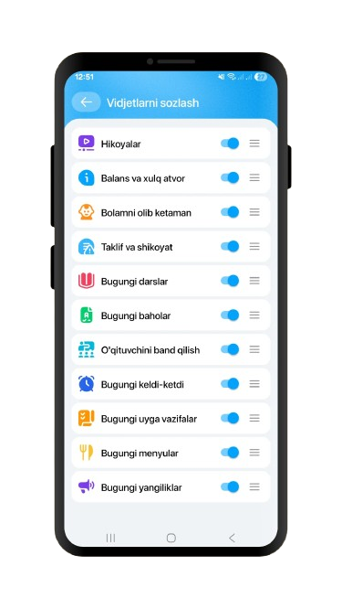

Bahorgi qabul ochildi
Yangi guruhlarga arizalar qabul qilinmoqda. Suhbat va mos guruh tanlovi oldindan yozilish asosida amalga oshiriladi.
Uchrashuvlar, ochiq eshiklar kuni, fan haftaligi va qabul jarayoniga oid ma’lumotlar shu sahifada bir joyga jamlangan.

Bu yerda eng muhim va tezkor yangilanishlar joylashtiriladi.
Yangi guruhlarga arizalar qabul qilinmoqda. Suhbat va mos guruh tanlovi oldindan yozilish asosida amalga oshiriladi.

O‘quv reja, davomat va natija tahlili bo‘yicha umumiy uchrashuv kelasi hafta rejalashtirilgan.

O‘quvchilar kichik taqdimot va amaliy ishlar bilan o‘z bilimlarini namoyish etadilar.
Grand Imtihon davomida o‘quvchilar o‘z bilimini sinovdan o‘tkazdi, ustozlar esa natijalarni yo‘nalishlar bo‘yicha tahlil qilishni boshladi. Imtihon jarayonida intizom, vaqtga ishlash va mavzularni mustahkamlash darajasi alohida kuzatildi.
Grand imtihonining eng yuqori natijalari alohida sahifaga joylandi. U yerda Top 10 o‘quvchi, umumiy foiz ko‘rsatkichi va grand darajasini jadval ko‘rinishida ko‘rish mumkin.
Asosiy mavzular bo‘yicha bilim darajasi, test bilan ishlash tezligi va mustaqil fikrlash ko‘nikmalari tahlil qilindi.
Natijaga qarab qo‘shimcha mashg‘ulotlar, tavsiya etilgan yo‘nalishlar va kuchaytirilgan guruhlar shakllantiriladi.
Kelgusi haftalar va oylar davomida bo‘lib o‘tadigan asosiy tadbirlar jadvali.
| Sana | Tadbir | Ishtirokchilar | Izoh |
|---|---|---|---|
| -- | Ochiq eshiklar kuni | Ota-onalar va mehmonlar | Sinf va ustozlar bilan tanishuv |
| -- | Fan haftaligi | 5–9-sinflar | Loyiha va chiqishlar |
| -- | Natija uchrashuvi | Kuratorlar va ota-onalar | Haftalik tahlillar bo‘yicha suhbat |
| -- | Yozgi qabul taqdimoti | Yangi murojaatchilar | Qabul bilan uchrashuv |

Ilova orqali ota-onalar va o‘quvchilar muhim ma’lumotlarni bir joyda ko‘rib borishlari mumkin. Kundalik nazorat, tezkor xabarlar va o‘quv jarayoniga oid qulayliklar ilova ichida jamlangan.
Apple App Store yoki Play Market orqali Mahorat School deb qidirsangiz, ilovani topishingiz mumkin.
Mahorat School ilovasi orqali ota-onalar va o‘quvchilar ustozlar bilan yanada qulay va tezkor bog‘lanishlari mumkin. Dars jarayoni, topshiriqlar va izohlar bir joyda ko‘rinadi.
Ilova ichida ustozlar tomonidan berilgan muhim eslatmalar, darsga oid ko‘rsatmalar va o‘quvchining kundalik holati qulay tarzda kuzatib boriladi.
Maktab tadbirlarida qatnashish va ariza topshirishda e’tibor qilinadigan qisqa eslatmalar.
Qabul va uchrashuvlar uchun oldindan murojaat qoldirilsa, navbat ancha qulay tashkil qilinadi.
Ba’zi uchrashuvlarda boshlang‘ich ma’lumotlar va o‘quvchi haqidagi qisqa ma’lumot talab qilinadi.